板式家具的材料知识
板材
板式家具最主要的材料就是工业化生产的标准板，长2.44米，宽1.22米，厚度规格有很多，材料品种繁多，这里只介绍几种常用的。
纤维板
有低密度纤维板和中密度纤维板两种，一般用的是中密度纤维板，厚度为15mm、18mm适合用来做衣柜、书架等，3-5mm的用来做非承重板，比如抽屉底板等。
纤维板的特点是密度低，易受潮，加工粉尘大，纵向加工（比如上螺丝、开孔等）易开裂，如果没有台锯、台钻，不推荐使用纤维板DIY。
防潮板
防潮板是在基材的生产过程中加入一定比例的防潮粒子（一般是绿色的），论坛里木友说的三聚氰胺板就是防潮板，常见的防潮板是重级刨花板＋防潮粒子＋三聚氰胺热压装饰面做成，厚度一般为16mm，适合做橱柜、浴室柜等易受潮的家具，当然做衣柜、书架、鞋柜也可以。
防潮板的密度比纤维板大，防潮性能远高于纤维板，也不易开裂，比较适合DIY。
细木工板
细木工板又叫大芯板，上下表面为两片单板，中间胶压拼接细木条。相对于纤维板、防潮板而言，细木工板既具有标准板的表面平整、不易变形的特点，又具有天然木板的特性，握钉力好，可以采用铁钉接合。
一般装修公司会采用细木工板，使用射钉枪接合速度快效率高。对于DIY来说，我暂时没发现这种板有什么优点。
胶合板
胶合板由多层薄木板纵横胶合压制而成，常见的有三层、五层，所以又叫三合板、五合板。由于采用纵横胶合压制，胶合板纵横方向的物理、机械性能几乎一样，明显优于天然木材，同时也保留天然木板握钉力好的特点，可以采用铁钉接合。
胶合板适合做受力较强的家具，论坛里有多位木友用胶合板来做工具台、电圆锯改台锯的锯台。
集成材与指接板
这两种材料与实木的性能一致，相当于工厂把木板拼成宽板，一般是喜欢实木又不想自己拼板的木友使用，我没有用过。
表面饰材
板式家具的表面处理一般采用贴面方式，很少采用油漆的，这里介绍几种常用的贴面材料。
防火板
防火板是采用硅质材料或钙质材料为主要原料，与一定比例的纤维材料、轻质骨料、黏合剂和化学添加剂混合，经蒸压技术制成的装饰板材。
防火板一般用于板式家具的外表面贴面，厚度一般在1mm左右，外观品种非常多，装饰特性比防火特性还明显。
封边条
封边条用户板式家具的板材切割面封边，有PVC封边条、金属封边条、薄木封边条等。
木纹纸
木纹纸在以前使用得比较多，现在一般都采用防火板了。
五金件
螺丝钉
这个很常见，使用螺丝接合时使用，纤维板、防潮板使用纤维板螺钉，其它接近实木性能的板材用木螺钉。
三合一连接件
三合一连接件由偏心件、连接杆、预埋件三部分组成，用在家具上方便美观，结实耐用，并且可以多次拆装，被许多家具厂家采用，个人DIY也可以采用但需要一定的技术，一般没有台钻、排钻，安装一个三合一连接件需要在两块板上准确的位置钻3个孔，而且要深度不能有太大的偏差，使用手电钻操作有一定难度，效率也较低。
暗铰链
制作往外拉开的柜门需要使用暗铰链，有全遮(全盖)、半遮（半盖、半开）、全开（内藏）三种，一般是柜子最外边的柜门使用全遮铰链，中间的柜门使用半遮铰链，内藏式柜门则需要使用全开铰链。
柜门导轨
制作滑动式柜门使用，有装在上端的也有装在下端的，具体按需要使用。
抽屉导轨
安装抽屉使用，有滑轮式（二节）和滚珠式（三节）两种，滑轮式比较便宜，有噪音，滚珠式则较贵但推拉时非常平滑没有噪音。
拉手
抽屉、柜门拉手，种类繁多，按个人喜好选择。
层板托
也叫板支件，制作书架、鞋柜、置物架的层托板支撑使用，具有层板位置可调整的特点，种类也较多。
化工材料
白乳胶
贴防火板、圆木榫接合使用。
万能胶
贴封边条使用。
胶水的种类很多，并不一定要使用上述胶水，论坛里用什么胶水的例子都有。
油漆、水性漆等我没有使用过，在这就不作介绍了。
附：材料图片（所有图片均从网上搜索得来）
纤维板
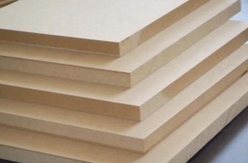
防潮板
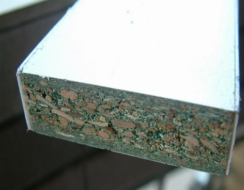
细木工板
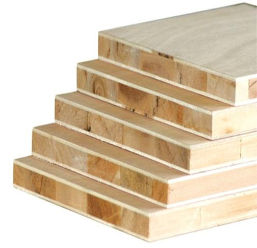
胶合板
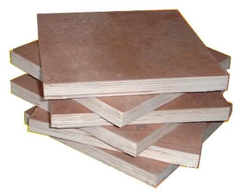
集成材
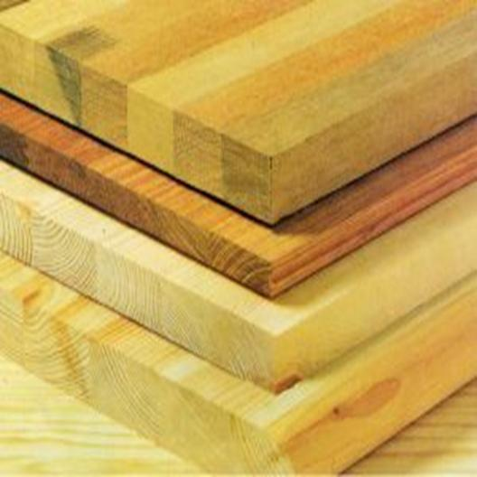
指接板
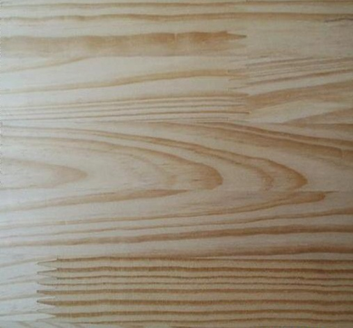
防火板
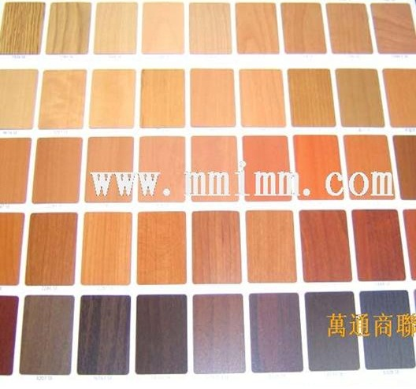
封边条
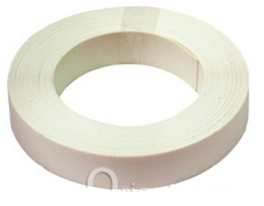
木纹纸
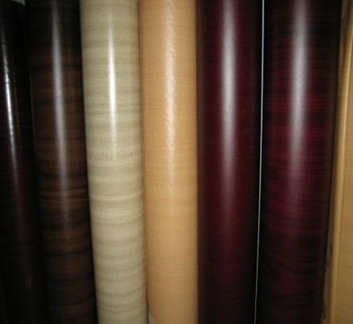
螺丝钉
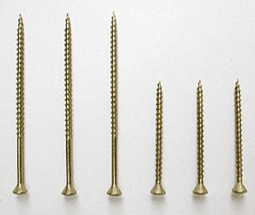
三合一连接件

暗铰链
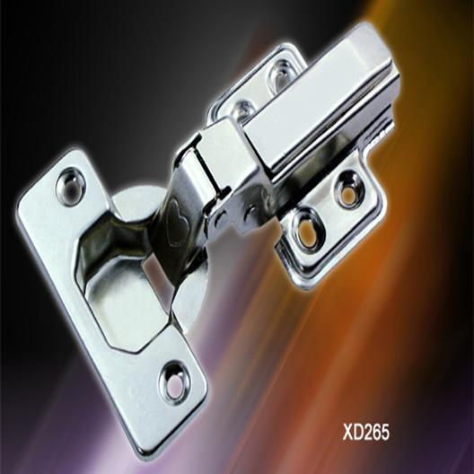
柜门导轨
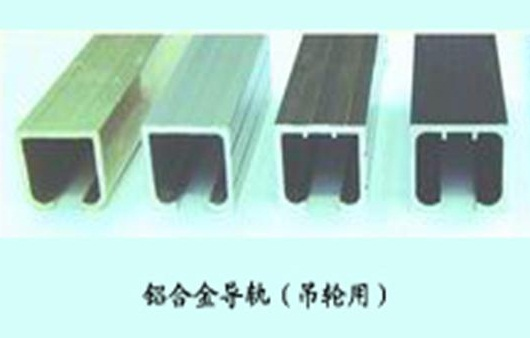
抽屉导轨
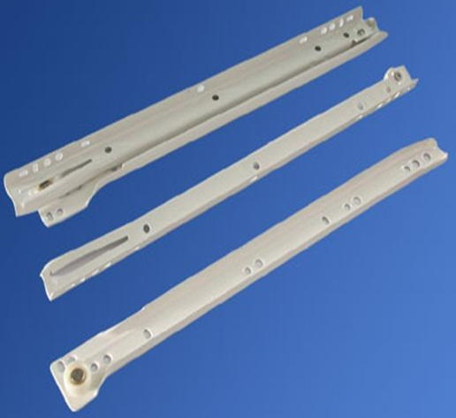
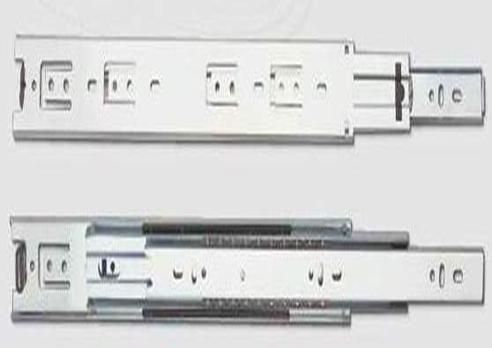
拉手
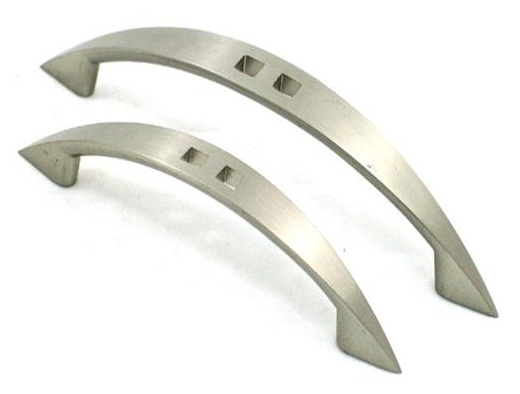
层板托
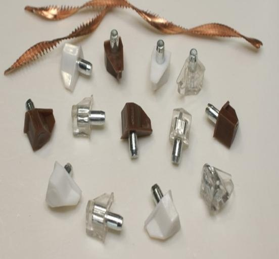
白乳胶
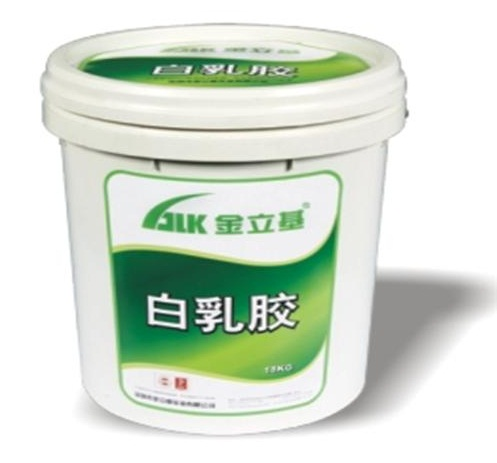
万能胶
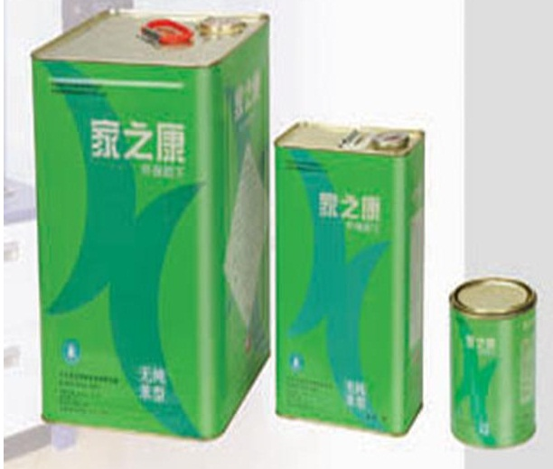